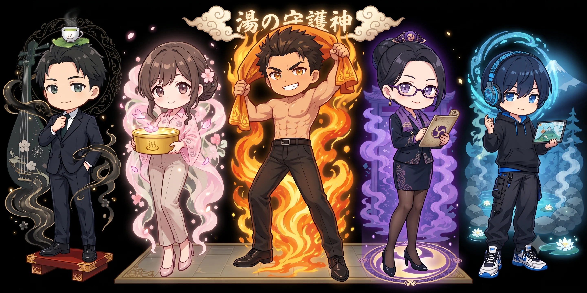
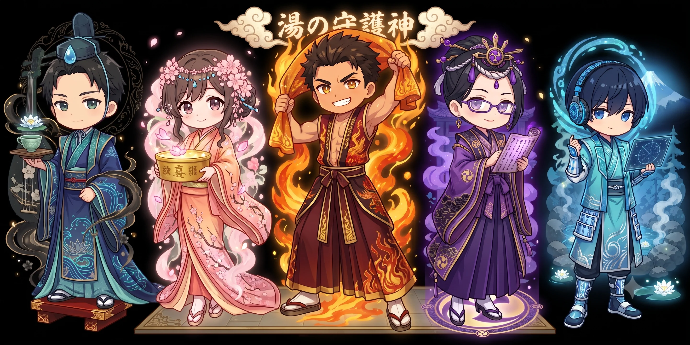

GIFU SPA ORACLE / AFTER WORK
岐阜の湯で、
今日を流す。
湯気の中から今夜の担当神がひとり登場します。リロードするたびに別の神様・別衣装になることも。3つの質問に答えると、その神様が最後まで岐阜の一湯を案内します。
そのまま下へ。3つだけ教えてください
17:32 湯けむり召喚中
今夜の湯は、私に任せてください。
湯けむり装束
湯川明神
近場でサクッと綺麗
ABOUT SPAJIN
スパ人とは
定時後になると、給湯室より温浴施設の話が長くなる社内愛好会。温浴への偏愛が神格化した「五神」が、湯けむりの向こうから今夜の一湯を提案します。


湯けむりのお告げ
0 / 3 選択済み
湯けむりの向こうに、今夜のあなたに合う一湯が見えています。
考えすぎず、心に浮かんだ言葉を選んでください。
あと3つ選ぶと、スパ神が今夜の一湯を示します。
♨
湯
今夜の湯運
GIFU ONSEN GUIDE
温泉効能をメインにしたおすすめ理由
施設紹介・過ごし方
※温泉効能・施設紹介文は、作成済みの「温泉効能」スプレッドシート由来のモック用データです。効能の感じ方には個人差があります。実際のお出かけ前に公式情報をご確認ください。
え？そこはいつも行くホームだって？